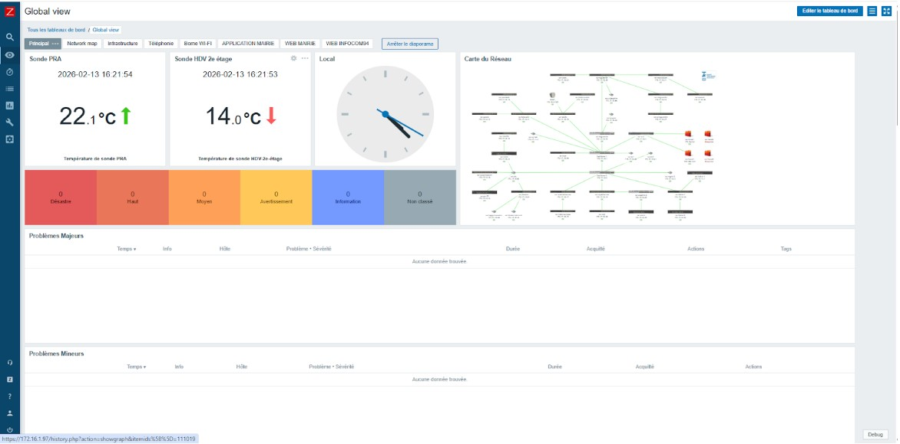

Afin de prévenir les pannes et de garantir la haute disponibilité des services de l'entreprise, j'ai participé à la supervision de l'infrastructure via l'outil Zabbix. Mon rôle principal a été d'enrichir cette plateforme en y intégrant les équipements du réseau pour suivre leur état de santé.
Pour mener à bien cette intégration de manière méthodique, j'ai structuré mon intervention en plusieurs phases, représentées dans le diagramme de Gantt ci-dessous : de l'inventaire des équipements à la phase finale de test des alertes.
| Tâches du projet | Lundi 02/02 | Mardi 03/02 | Mercredi 04/02 | Jeudi 05/02 | Vendredi 06/02 |
|---|---|---|---|---|---|
| Analyse de l’infrastructure | |||||
| Conception de la supervision (maps, besoins) | |||||
| Mise en place de la supervision Zabbix | |||||
| Configuration (hôtes web + switch) | |||||
| Tests & validation | |||||
| Présentation à l’équipe |